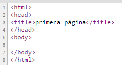

Estructura del código de una página web
|
El lenguaje html utiliza etiquetas. Estas etiquetas son palabras clave que comienzan por el signo "menor que" y acaban por el signo "mayor que". Todas las páginas web comienzan por la etiqueta <html> y acaban con esta misma etiqueta con una barra inclinada al principio </html>, es lo que se conoce como cerrar una etiqueta. En html casi todas las etiquetas se han de abrir y, posteriormente, cerrar. Las páginas web tienen una estructura básica que divide el código en dos zonas: la cabecera y el cuerpo.  La cabecera se delimita mediante las etiquetas <head> y </head>. Por su parte el cuerpo se delimita mediante las etiquetas <body> y </body>. El contenido que se ha de mostrar en la página web se incluye en el cuerpo (body). En la cabecera se introduce información que no se ha de mostrar, como el título que se puede ver en la pestaña del navegador, el código JavaScript, etc. Fíjate, a continuación, en la estructura del código html y modifica el texto incluido dentro del cuerpo de la página web. Para poder ver los cambios se ha de hacer un clic fuera del cuadro de texto que hemos modificado.
|


<head>
<title>primera página</title>
</head>
<body>
Este es el texto que se mostrará en pantalla.
</body>
</html>
Este es el texto que se mostrará en pantalla.
Ejercicio 1.- Has de hacer una página web en la que tan solo se muestre un párrafo en el que te describas a ti mismo.